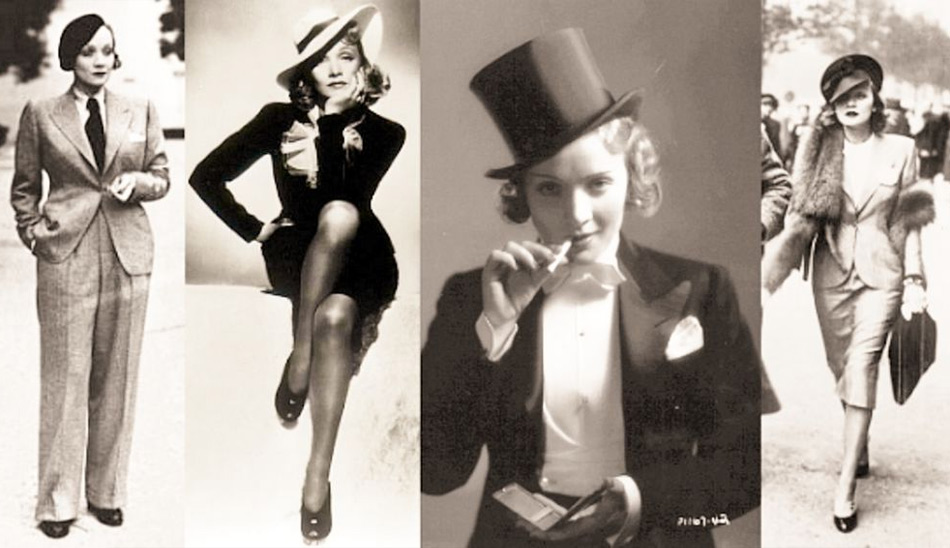

Марлен Дитрих (Marlene Dietrich) родилась в Берлине 27 декабря 1901 года в семье военного, а впоследствии — лейтенанта полиции, Луи Эриха Отто Дитриха и его супруги Вильгельмины Фельзинг, происходившей из обеспеченной семьи торговцев-часовщиков. Настоящее имя Марлен - Мария Магдалена Дитрих фон Лош. За год до появления Марии на свет у ее родителей родилась первая дочь, Элизабет.
В школе для девочек, где будущая актриса начала учиться с 1907 года, Мария увлеклась музыкой, стала играть на лютне, а позже — на скрипке. Когда пришли времена Первой мировой, жизнь семьи Дитрихов изменилась, весь уклад был подчинен текущим военным событиям. Кроме того, мать и дочери переехали в Дессау, откуда вернулись в Берлин в 1917 году. Тогда летом она впервые сыграла на скрипке перед публикой.
Примерно месяц Марлен проработала в оркестре, аккомпанирующем немым фильмам, затем начала брать уроки вокала у известного берлинского преподавателя. В 20-х годах стала петь в кабаре. А в 1922 году первый раз снялась в кино — в биографической драме «Младший брат Наполеона».
Звездной работой Марлен, в буквальном смысле создавшей ее, стала роль певицы кабаре в фильме «Голубой ангел» (1930) с участием Эмиля Яннингса («Глаза мумии Ма»).
Ссылки:
Материал из Википедии